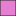

<!doctype html>
<html lang="en">
    <head>
        <meta charset="utf-8">
        <meta http-equiv="X-UA-Compatible" content="IE=edge">
        <meta name="viewport" content="initial-scale=1,user-scalable=no,maximum-scale=1,width=device-width">
        <meta name="mobile-web-app-capable" content="yes">
        <meta name="apple-mobile-web-app-capable" content="yes">
        <link rel="stylesheet" href="css/leaflet.css">
        <link rel="stylesheet" href="css/L.Control.Layers.Tree.css">
        <link rel="stylesheet" href="css/L.Control.Locate.min.css">
        <link rel="stylesheet" href="css/qgis2web.css">
        <link rel="stylesheet" href="css/fontawesome-all.min.css">
        <link rel="stylesheet" href="css/filter.css">
<link rel="stylesheet" href="css/nouislider.min.css">
        <link rel="stylesheet" href="css/leaflet-control-geocoder.Geocoder.css">
        <link rel="stylesheet" href="css/leaflet-measure.css">
        <style>
        html, body, #map {
            width: 100%;
            height: 100%;
            padding: 0;
            margin: 0;
        }
        </style>
        <title>Carte Web des bâtis à risque d'exposition au paludisme face aux facteurs environnementaux déclencheurs à Djida Thiaroye Kaw</title>
    </head>
    <body>
        <div id="map">
        </div>
        <script src="js/qgis2web_expressions.js"></script>
        <script src="js/leaflet.js"></script>
        <script src="js/L.Control.Layers.Tree.min.js"></script>
        <script src="js/L.Control.Locate.min.js"></script>
        <script src="js/leaflet.rotatedMarker.js"></script>
        <script src="js/leaflet.pattern.js"></script>
        <script src="js/leaflet-hash.js"></script>
        <script src="js/Autolinker.min.js"></script>
        <script src="js/rbush.min.js"></script>
        <script src="js/labelgun.min.js"></script>
        <script src="js/labels.js"></script>
        <script src="js/leaflet-control-geocoder.Geocoder.js"></script>
        <script src="js/leaflet-measure.js"></script>
        <script src="js/tailDT.js"></script>
<script src="js/nouislider.min.js"></script>
<script src="js/wNumb.js"></script>
        <script src="data/Limitequartiers_1.js"></script>
        <script src="data/Btis__risque_2.js"></script>
        <script src="data/Gteslarvaires_3.js"></script>
        <script src="data/Limitecommune_4.js"></script>
        <script>
        var map = L.map('map', {
            zoomControl:false, maxZoom:28, minZoom:6
        })
        var hash = new L.Hash(map);
        map.attributionControl.setPrefix('<a href="https://github.com/tomchadwin/qgis2web" target="_blank">qgis2web</a> &middot; <a href="https://leafletjs.com" title="A JS library for interactive maps">Leaflet</a> &middot; <a href="https://qgis.org">QGIS</a>');
        var autolinker = new Autolinker({truncate: {length: 30, location: 'smart'}});
        // remove popup's row if "visible-with-data"
        function removeEmptyRowsFromPopupContent(content, feature) {
         var tempDiv = document.createElement('div');
         tempDiv.innerHTML = content;
         var rows = tempDiv.querySelectorAll('tr');
         for (var i = 0; i < rows.length; i++) {
             var td = rows[i].querySelector('td.visible-with-data');
             var key = td ? td.id : '';
             if (td && td.classList.contains('visible-with-data') && feature.properties[key] == null) {
                 rows[i].parentNode.removeChild(rows[i]);
             }
         }
         return tempDiv.innerHTML;
        }
        // add class to format popup if it contains media
		function addClassToPopupIfMedia(content, popup) {
			var tempDiv = document.createElement('div');
			tempDiv.innerHTML = content;
			if (tempDiv.querySelector('td img')) {
				popup._contentNode.classList.add('media');
					// Delay to force the redraw
					setTimeout(function() {
						popup.update();
					}, 10);
			} else {
				popup._contentNode.classList.remove('media');
			}
		}
        var title = new L.Control({'position':'topright'});
        title.onAdd = function (map) {
            this._div = L.DomUtil.create('div', 'info');
            this.update();
            return this._div;
        };
        title.update = function () {
            this._div.innerHTML = '<h2>Carte Web des bâtis à risque d\'exposition au paludisme face aux facteurs environnementaux déclencheurs à Djida Thiaroye Kaw</h2>';
        };
        title.addTo(map);
        var abstract = new L.Control({'position':'bottomleft'});
        abstract.onAdd = function (map) {
            this._div = L.DomUtil.create('div',
            'leaflet-control abstract');
            this._div.id = 'abstract'
                this._div.setAttribute("onmouseenter", "abstract.show()");
                this._div.setAttribute("onmouseleave", "abstract.hide()");
                this.hide();
                return this._div;
            };
            abstract.hide = function () {
                this._div.classList.remove("abstractUncollapsed");
                this._div.classList.add("abstract");
                this._div.innerHTML = 'i'
            }
            abstract.show = function () {
                this._div.classList.remove("abstract");
                this._div.classList.add("abstractUncollapsed");
                this._div.innerHTML = 'Dans le cadre de la lutte contre le paludisme, cette étude a permis de réaliser une carte web des bâtis à risque d’exposition dans la commune de Djida Thiaroye Kao. En s’appuyant sur l’analyse spatiale des facteurs environnementaux déclencheurs du paludisme, notamment la présence des gîtes larvaires tels que les zones humides, les bassins de rétention et les zones inondables, la carte identifie et catégorise les zones résidentielles selon leur niveau de vulnérabilité.<br />Grâce à l’intégration de données issues de la télédétection, du Système d’Information Géographique (SIG) et des relevés de terrain, les bâtis situés à proximité immédiate de ces milieux propices à la prolifération des moustiques vecteurs du paludisme ont été géolocalisés et classés par degré de risque.<br />Cette carte web interactive constitue ainsi un outil stratégique d’aide à la décision pour les services de santé et les collectivités territoriales, en facilitant la planification des campagnes de démoustication et des actions de sensibilisation ciblées.<br />';
        };
        abstract.addTo(map);
        var zoomControl = L.control.zoom({
            position: 'topleft'
        }).addTo(map);
        L.control.locate({locateOptions: {maxZoom: 19}}).addTo(map);
        var measureControl = new L.Control.Measure({
            position: 'topleft',
            primaryLengthUnit: 'meters',
            secondaryLengthUnit: 'kilometers',
            primaryAreaUnit: 'sqmeters',
            secondaryAreaUnit: 'hectares'
        });
        measureControl.addTo(map);
        document.getElementsByClassName('leaflet-control-measure-toggle')[0].innerHTML = '';
        document.getElementsByClassName('leaflet-control-measure-toggle')[0].className += ' fas fa-ruler';
        var bounds_group = new L.featureGroup([]);
        function setBounds() {
            if (bounds_group.getLayers().length) {
                map.fitBounds(bounds_group.getBounds());
            }
        }
        map.createPane('pane_OSMStandard_0');
        map.getPane('pane_OSMStandard_0').style.zIndex = 400;
        var layer_OSMStandard_0 = L.tileLayer('http://tile.openstreetmap.org/{z}/{x}/{y}.png', {
            pane: 'pane_OSMStandard_0',
            opacity: 1.0,
            attribution: '<a href="https://www.openstreetmap.org/copyright">© OpenStreetMap contributors, CC-BY-SA</a>',
            minZoom: 6,
            maxZoom: 28,
            minNativeZoom: 0,
            maxNativeZoom: 19
        });
        layer_OSMStandard_0;
        map.addLayer(layer_OSMStandard_0);
        function pop_Limitequartiers_1(feature, layer) {
            var popupContent = '<table>\
                    <tr>\
                        <th scope="row">QRT_VLG_HA</th>\
                        <td>' + (feature.properties['QRT_VLG_HA'] !== null ? autolinker.link(String(feature.properties['QRT_VLG_HA']).replace(/'/g, '\'').toLocaleString()) : '') + '</td>\
                    </tr>\
                    <tr>\
                        <th scope="row">CCRCA</th>\
                        <td>' + (feature.properties['CCRCA'] !== null ? autolinker.link(String(feature.properties['CCRCA']).replace(/'/g, '\'').toLocaleString()) : '') + '</td>\
                    </tr>\
                    <tr>\
                        <th scope="row">Superficie</th>\
                        <td>' + (feature.properties['Superficie'] !== null ? autolinker.link(String(feature.properties['Superficie']).replace(/'/g, '\'').toLocaleString()) : '') + '</td>\
                    </tr>\
                    <tr>\
                        <th scope="row">Pop</th>\
                        <td class="visible-with-data" id="Pop">' + (feature.properties['Pop'] !== null ? autolinker.link(String(feature.properties['Pop']).replace(/'/g, '\'').toLocaleString()) : '') + '</td>\
                    </tr>\
                </table>';
            var content = removeEmptyRowsFromPopupContent(popupContent, feature);
			layer.on('popupopen', function(e) {
				addClassToPopupIfMedia(content, e.popup);
			});
			layer.bindPopup(content, { maxHeight: 400 });
        }

        function style_Limitequartiers_1_0() {
            return {
                pane: 'pane_Limitequartiers_1',
                opacity: 1,
                color: 'rgba(35,35,35,1.0)',
                dashArray: '',
                lineCap: 'butt',
                lineJoin: 'miter',
                weight: 2.0, 
                fillOpacity: 0,
                interactive: true,
            }
        }
        map.createPane('pane_Limitequartiers_1');
        map.getPane('pane_Limitequartiers_1').style.zIndex = 401;
        map.getPane('pane_Limitequartiers_1').style['mix-blend-mode'] = 'normal';
        var layer_Limitequartiers_1 = new L.geoJson(json_Limitequartiers_1, {
            attribution: '',
            interactive: true,
            dataVar: 'json_Limitequartiers_1',
            layerName: 'layer_Limitequartiers_1',
            pane: 'pane_Limitequartiers_1',
            onEachFeature: pop_Limitequartiers_1,
            style: style_Limitequartiers_1_0,
        });
        bounds_group.addLayer(layer_Limitequartiers_1);
        map.addLayer(layer_Limitequartiers_1);
        function pop_Btis__risque_2(feature, layer) {
            var popupContent = '<table>\
                    <tr>\
                        <th scope="row">Nom</th>\
                        <td>' + (feature.properties['Nom'] !== null ? autolinker.link(String(feature.properties['Nom']).replace(/'/g, '\'').toLocaleString()) : '') + '</td>\
                    </tr>\
                    <tr>\
                        <th scope="row">Niv_Risque</th>\
                        <td>' + (feature.properties['Niv_Risque'] !== null ? autolinker.link(String(feature.properties['Niv_Risque']).replace(/'/g, '\'').toLocaleString()) : '') + '</td>\
                    </tr>\
                </table>';
            var content = removeEmptyRowsFromPopupContent(popupContent, feature);
			layer.on('popupopen', function(e) {
				addClassToPopupIfMedia(content, e.popup);
			});
			layer.bindPopup(content, { maxHeight: 400 });
        }

        function style_Btis__risque_2_0(feature) {
            switch(String(feature.properties['Nom'])) {
                case 'batis_à_200m':
                    return {
                pane: 'pane_Btis__risque_2',
                opacity: 1,
                color: 'rgba(35,35,35,1.0)',
                dashArray: '',
                lineCap: 'butt',
                lineJoin: 'miter',
                weight: 1.0, 
                fill: true,
                fillOpacity: 1,
                fillColor: 'rgba(227,26,28,1.0)',
                interactive: true,
            }
                    break;
                case 'batis_à_300m':
                    return {
                pane: 'pane_Btis__risque_2',
                opacity: 1,
                color: 'rgba(35,35,35,1.0)',
                dashArray: '',
                lineCap: 'butt',
                lineJoin: 'miter',
                weight: 1.0, 
                fill: true,
                fillOpacity: 1,
                fillColor: 'rgba(242,242,44,1.0)',
                interactive: true,
            }
                    break;
                case 'batis_à_400m':
                    return {
                pane: 'pane_Btis__risque_2',
                opacity: 1,
                color: 'rgba(35,35,35,1.0)',
                dashArray: '',
                lineCap: 'butt',
                lineJoin: 'miter',
                weight: 1.0, 
                fill: true,
                fillOpacity: 1,
                fillColor: 'rgba(218,103,21,1.0)',
                interactive: true,
            }
                    break;
                case 'batis_à_500m':
                    return {
                pane: 'pane_Btis__risque_2',
                opacity: 1,
                color: 'rgba(35,35,35,1.0)',
                dashArray: '',
                lineCap: 'butt',
                lineJoin: 'miter',
                weight: 1.0, 
                fill: true,
                fillOpacity: 1,
                fillColor: 'rgba(230,127,209,1.0)',
                interactive: true,
            }
                    break;
            }
        }
        map.createPane('pane_Btis__risque_2');
        map.getPane('pane_Btis__risque_2').style.zIndex = 402;
        map.getPane('pane_Btis__risque_2').style['mix-blend-mode'] = 'normal';
        var layer_Btis__risque_2 = new L.geoJson(json_Btis__risque_2, {
            attribution: '',
            interactive: true,
            dataVar: 'json_Btis__risque_2',
            layerName: 'layer_Btis__risque_2',
            pane: 'pane_Btis__risque_2',
            onEachFeature: pop_Btis__risque_2,
            style: style_Btis__risque_2_0,
        });
        bounds_group.addLayer(layer_Btis__risque_2);
        map.addLayer(layer_Btis__risque_2);
        function pop_Gteslarvaires_3(feature, layer) {
            var popupContent = '<table>\
                    <tr>\
                        <th scope="row">TYPES_</th>\
                        <td>' + (feature.properties['TYPES_'] !== null ? autolinker.link(String(feature.properties['TYPES_']).replace(/'/g, '\'').toLocaleString()) : '') + '</td>\
                    </tr>\
                    <tr>\
                        <th scope="row">Superficie</th>\
                        <td>' + (feature.properties['Superficie'] !== null ? autolinker.link(String(feature.properties['Superficie']).replace(/'/g, '\'').toLocaleString()) : '') + '</td>\
                    </tr>\
                </table>';
            var content = removeEmptyRowsFromPopupContent(popupContent, feature);
			layer.on('popupopen', function(e) {
				addClassToPopupIfMedia(content, e.popup);
			});
			layer.bindPopup(content, { maxHeight: 400 });
        }

        function style_Gteslarvaires_3_0(feature) {
            switch(String(feature.properties['TYPES_'])) {
                case 'Bassins de rétention':
                    return {
                pane: 'pane_Gteslarvaires_3',
                opacity: 1,
                color: 'rgba(35,35,35,1.0)',
                dashArray: '',
                lineCap: 'butt',
                lineJoin: 'miter',
                weight: 1.0, 
                fill: true,
                fillOpacity: 1,
                fillColor: 'rgba(166,206,227,1.0)',
                interactive: true,
            }
                    break;
                case 'Zone inondable/Prairie maréca':
                    return {
                pane: 'pane_Gteslarvaires_3',
                opacity: 1,
                color: 'rgba(35,35,35,1.0)',
                dashArray: '',
                lineCap: 'butt',
                lineJoin: 'miter',
                weight: 1.0, 
                fill: true,
                fillOpacity: 1,
                fillColor: 'rgba(31,120,180,1.0)',
                interactive: true,
            }
                    break;
                case 'Zones humides':
                    return {
                pane: 'pane_Gteslarvaires_3',
                opacity: 1,
                color: 'rgba(35,35,35,1.0)',
                dashArray: '',
                lineCap: 'butt',
                lineJoin: 'miter',
                weight: 1.0, 
                fill: true,
                fillOpacity: 1,
                fillColor: 'rgba(51,160,44,1.0)',
                interactive: true,
            }
                    break;
            }
        }
        map.createPane('pane_Gteslarvaires_3');
        map.getPane('pane_Gteslarvaires_3').style.zIndex = 403;
        map.getPane('pane_Gteslarvaires_3').style['mix-blend-mode'] = 'normal';
        var layer_Gteslarvaires_3 = new L.geoJson(json_Gteslarvaires_3, {
            attribution: '',
            interactive: true,
            dataVar: 'json_Gteslarvaires_3',
            layerName: 'layer_Gteslarvaires_3',
            pane: 'pane_Gteslarvaires_3',
            onEachFeature: pop_Gteslarvaires_3,
            style: style_Gteslarvaires_3_0,
        });
        bounds_group.addLayer(layer_Gteslarvaires_3);
        map.addLayer(layer_Gteslarvaires_3);
        function pop_Limitecommune_4(feature, layer) {
            var popupContent = '<table>\
                    <tr>\
                        <th scope="row">REG</th>\
                        <td>' + (feature.properties['REG'] !== null ? autolinker.link(String(feature.properties['REG']).replace(/'/g, '\'').toLocaleString()) : '') + '</td>\
                    </tr>\
                    <tr>\
                        <th scope="row">DEPT</th>\
                        <td>' + (feature.properties['DEPT'] !== null ? autolinker.link(String(feature.properties['DEPT']).replace(/'/g, '\'').toLocaleString()) : '') + '</td>\
                    </tr>\
                    <tr>\
                        <th scope="row">CCRCA</th>\
                        <td>' + (feature.properties['CCRCA'] !== null ? autolinker.link(String(feature.properties['CCRCA']).replace(/'/g, '\'').toLocaleString()) : '') + '</td>\
                    </tr>\
                    <tr>\
                        <th scope="row">Masculin</th>\
                        <td class="visible-with-data" id="Masculin">' + (feature.properties['Masculin'] !== null ? autolinker.link(String(feature.properties['Masculin']).replace(/'/g, '\'').toLocaleString()) : '') + '</td>\
                    </tr>\
                </table>';
            var content = removeEmptyRowsFromPopupContent(popupContent, feature);
			layer.on('popupopen', function(e) {
				addClassToPopupIfMedia(content, e.popup);
			});
			layer.bindPopup(content, { maxHeight: 400 });
        }

        function style_Limitecommune_4_0() {
            return {
                pane: 'pane_Limitecommune_4',
                opacity: 1,
                color: 'rgba(35,35,35,1.0)',
                dashArray: '',
                lineCap: 'butt',
                lineJoin: 'miter',
                weight: 4.0, 
                fillOpacity: 0,
                interactive: false,
            }
        }
        map.createPane('pane_Limitecommune_4');
        map.getPane('pane_Limitecommune_4').style.zIndex = 404;
        map.getPane('pane_Limitecommune_4').style['mix-blend-mode'] = 'normal';
        var layer_Limitecommune_4 = new L.geoJson(json_Limitecommune_4, {
            attribution: '',
            interactive: false,
            dataVar: 'json_Limitecommune_4',
            layerName: 'layer_Limitecommune_4',
            pane: 'pane_Limitecommune_4',
            onEachFeature: pop_Limitecommune_4,
            style: style_Limitecommune_4_0,
        });
        bounds_group.addLayer(layer_Limitecommune_4);
        map.addLayer(layer_Limitecommune_4);
        var osmGeocoder = new L.Control.Geocoder({
            collapsed: true,
            position: 'topleft',
            text: 'Search',
            title: 'Testing'
        }).addTo(map);
        document.getElementsByClassName('leaflet-control-geocoder-icon')[0]
        .className += ' fa fa-search';
        document.getElementsByClassName('leaflet-control-geocoder-icon')[0]
        .title += 'Search for a place';
        var overlaysTree = [
            {label: ' Limite commune', layer: layer_Limitecommune_4},
            {label: 'Gîtes larvaires<br /><table><tr><td style="text-align: center;"></td><td>Bassins de rétention</td></tr><tr><td style="text-align: center;"></td><td>Zone inondable/Prairie maréca</td></tr><tr><td style="text-align: center;"></td><td>Zones humides</td></tr></table>', layer: layer_Gteslarvaires_3},
            {label: 'Bâtis_à_risque<br /><table><tr><td style="text-align: center;"></td><td>batis_à_200m</td></tr><tr><td style="text-align: center;"></td><td>batis_à_300m</td></tr><tr><td style="text-align: center;"></td><td>batis_à_400m</td></tr><tr><td style="text-align: center;"></td><td>batis_à_500m</td></tr></table>', layer: layer_Btis__risque_2},
            {label: ' Limite quartiers', layer: layer_Limitequartiers_1},
            {label: "OSM Standard", layer: layer_OSMStandard_0},]
        var lay = L.control.layers.tree(null, overlaysTree,{
            //namedToggle: true,
            //selectorBack: false,
            //closedSymbol: '&#8862; &#x1f5c0;',
            //openedSymbol: '&#8863; &#x1f5c1;',
            //collapseAll: 'Collapse all',
            //expandAll: 'Expand all',
            collapsed: false, 
        });
        lay.addTo(map);
		document.addEventListener("DOMContentLoaded", function() {
            // set new Layers List height which considers toggle icon
            function newLayersListHeight() {
                var layerScrollbarElement = document.querySelector('.leaflet-control-layers-scrollbar');
                if (layerScrollbarElement) {
                    var layersListElement = document.querySelector('.leaflet-control-layers-list');
                    var originalHeight = layersListElement.style.height 
                        || window.getComputedStyle(layersListElement).height;
                    var newHeight = parseFloat(originalHeight) - 50;
                    layersListElement.style.height = newHeight + 'px';
                }
            }
            var isLayersListExpanded = true;
            var controlLayersElement = document.querySelector('.leaflet-control-layers');
            var toggleLayerControl = document.querySelector('.leaflet-control-layers-toggle');
            // toggle Collapsed/Expanded and apply new Layers List height
            toggleLayerControl.addEventListener('click', function() {
                if (isLayersListExpanded) {
                    controlLayersElement.classList.remove('leaflet-control-layers-expanded');
                } else {
                    controlLayersElement.classList.add('leaflet-control-layers-expanded');
                }
                isLayersListExpanded = !isLayersListExpanded;
                newLayersListHeight()
            });	
			// apply new Layers List height if toggle layerstree
			if (controlLayersElement) {
				controlLayersElement.addEventListener('click', function(event) {
					var toggleLayerHeaderPointer = event.target.closest('.leaflet-layerstree-header-pointer span');
					if (toggleLayerHeaderPointer) {
						newLayersListHeight();
					}
				});
			}
            // Collapsed/Expanded at Start to apply new height
            setTimeout(function() {
                toggleLayerControl.click();
            }, 10);
            setTimeout(function() {
                toggleLayerControl.click();
            }, 10);
            // Collapsed touch/small screen
            var isSmallScreen = window.innerWidth < 650;
            if (isSmallScreen) {
                setTimeout(function() {
                    controlLayersElement.classList.remove('leaflet-control-layers-expanded');
                    isLayersListExpanded = !isLayersListExpanded;
                }, 500);
            }  
        });       
        setBounds();
        var mapDiv = document.getElementById('map');
        var row = document.createElement('div');
        row.className="row";
        row.id="all";
        row.style.height = "100%";
        var col1 = document.createElement('div');
        col1.className="col9";
        col1.id = "mapWindow";
        col1.style.height = "99%";
        col1.style.width = "80%";
        col1.style.display = "inline-block";
        var col2 = document.createElement('div');
        col2.className="col3";
        col2.id = "menu";
        col2.style.display = "inline-block";
        mapDiv.parentNode.insertBefore(row, mapDiv);
        document.getElementById("all").appendChild(col1);
        document.getElementById("all").appendChild(col2);
        col1.appendChild(mapDiv)
        var Filters = {"SUPERFICIE": "real"};
        function filterFunc() {
          map.eachLayer(function(lyr){
          if ("options" in lyr && "dataVar" in lyr["options"]){
            features = this[lyr["options"]["dataVar"]].features.slice(0);
            try{
              for (key in Filters){
                keyS = key.replace(/[^a-zA-Z0-9_]/g, "")
                if (Filters[key] == "str" || Filters[key] == "bool"){
                  var selection = [];
                  var options = document.getElementById("sel_" + keyS).options
                  for (var i=0; i < options.length; i++) {
                    if (options[i].selected) selection.push(options[i].value);
                  }
                    try{
                      if (key in features[0].properties){
                        for (i = features.length - 1;
                          i >= 0; --i){
                          if (selection.indexOf(
                          features[i].properties[key])<0
                          && selection.length>0) {
                          features.splice(i,1);
                          }
                        }
                      }
                    } catch(err){
                  }
                }
                if (Filters[key] == "int"){
                  sliderVals =  document.getElementById(
                    "div_" + keyS).noUiSlider.get();
                  try{
                    if (key in features[0].properties){
                    for (i = features.length - 1; i >= 0; --i){
                      if (parseInt(features[i].properties[key])
                          < sliderVals[0]
                          || parseInt(features[i].properties[key])
                          > sliderVals[1]){
                            features.splice(i,1);
                          }
                        }
                      }
                    } catch(err){
                    }
                  }
                if (Filters[key] == "real"){
                  sliderVals =  document.getElementById(
                    "div_" + keyS).noUiSlider.get();
                  try{
                    if (key in features[0].properties){
                    for (i = features.length - 1; i >= 0; --i){
                      if (features[i].properties[key]
                          < sliderVals[0]
                          || features[i].properties[key]
                          > sliderVals[1]){
                            features.splice(i,1);
                          }
                        }
                      }
                    } catch(err){
                    }
                  }
                if (Filters[key] == "date"
                  || Filters[key] == "datetime"
                  || Filters[key] == "time"){
                  try{
                    if (key in features[0].properties){
                      HTMLkey = key.replace(/[&\/\\#,+()$~%.'":*?<>{} ]/g, '');
                      startdate = document.getElementById("dat_" +
                        HTMLkey + "_date1").value.replace(" ", "T");
                      enddate = document.getElementById("dat_" +
                        HTMLkey + "_date2").value.replace(" ", "T");
                      for (i = features.length - 1; i >= 0; --i){
                        if (features[i].properties[key] < startdate
                          || features[i].properties[key] > enddate){
                          features.splice(i,1);
                        }
                      }
                    }
                  } catch(err){
                  }
                }
              }
            } catch(err){
            }
          this[lyr["options"]["layerName"]].clearLayers();
          this[lyr["options"]["layerName"]].addData(features);
          }
          })
        }
            document.getElementById("menu").appendChild(
                document.createElement("div"));
            var div_SUPERFICIE = document.createElement("div");
            div_SUPERFICIE.id = "div_SUPERFICIE";
            div_SUPERFICIE.className = "slider";
            document.getElementById("menu").appendChild(div_SUPERFICIE);
            var lab_SUPERFICIE = document.createElement('div');
            lab_SUPERFICIE.innerHTML  = 'SUPERFICIE: <span id="val_SUPERFICIE"></span>';
            lab_SUPERFICIE.className = 'filterlabel';
            document.getElementById("menu").appendChild(lab_SUPERFICIE);
            var reset_SUPERFICIE = document.createElement('div');
            reset_SUPERFICIE.innerHTML = 'clear filter';
            reset_SUPERFICIE.className = 'filterlabel';
            lab_SUPERFICIE.className = 'filterlabel';
            reset_SUPERFICIE.onclick = function() {
                sel_SUPERFICIE.noUiSlider.reset();
            };
            document.getElementById("menu").appendChild(reset_SUPERFICIE);
            var sel_SUPERFICIE = document.getElementById('div_SUPERFICIE');
            noUiSlider.create(sel_SUPERFICIE, {
                connect: true,
                start: [2.31822617261, 2.31822617261],
                range: {
                min: 2.31822617261,
                max: 2.31822617261
                }
            });
            sel_SUPERFICIE.noUiSlider.on('update', function (values) {
            val_SUPERFICIE = document.getElementById('val_SUPERFICIE');
            val_SUPERFICIE.innerHTML = values.join(' - ');
                filterFunc()
            });
        </script>
    </body>
</html>
